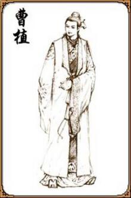

曹植生于初平三年（192年），是曹操与卞夫人的第三个儿子（卞夫人为曹操生了四个儿子：丕、彰、植、熊）。
曹植十多岁的时候，就能诵读《诗经》、《论语》及先秦两汉辞赋，诸子百家也曾广泛涉猎。他思路快捷，谈锋健锐， 进见曹操时每被提问常常应声而对，脱口成章。曹操曾经看了曹植写的文章，惊喜的问他：“你请人代写的吧？” 曹植答道：“话说出口就是论，下笔就成文章，只要当面考试就知道了，何必请人代作呢！” [5] 再加之性情坦率自然， 不讲究庄重的仪容，车马服饰，不追求华艳、富丽，这自然很合曹操的口味。渐渐地，曹操开始把爱心转移到曹植身上。
建安十一年（206年）八月，15岁的曹植第一次随父东征海贼管承到达淳于（今安丘东北）。
建安十二年（207年）一月，回师邺城，他在《求自试表》中所说“东临沧海”即指此事。九月，16岁的曹植随父北征柳城（今辽宁朝阳）， 他在《求自试表》中说“北出玄塞”即指此行，《白马篇》就是曹植对此期间随父征战的写照。
建安十三年（208年）七月，17岁的曹植随父南征刘表至新野，后又随父与孙权战于赤壁。 建安十四年（209年），曹植随父征战第一次回到家乡亳州。 [4]
建安十五年（210年），曹操在邺城所建的铜雀台落成，召集了一批文士“登台为赋”，曹植也在其中。在众人之中，独有曹植提笔略加思索， 一挥而就，而且第一个交卷，其文曰《登台赋》。从此曹操对曹植寄予厚望，以为他是最能成就大事的人。
建安十六年（211年）秋，刚行冠礼的曹植暂时告别了在邺城宴饮游乐、吟诗作赋的优游生活，慨然请缨，随父西征。 一路上跋山涉水，晓行夜宿。当西征大军辗转到帝都洛阳时，曹植被眼前的一幕惊呆了：饱受战火的洗劫，洛阳城往日的繁华消逝得无影无踪， 到处都是残垣断壁，荆棘丛生，昔日气势雄浑的皇宫已成一片废墟，湮没在杂草间，片片黄叶满城乱舞。满腔热血的曹植怀着一颗立功垂名的心， 随西征军离开洛阳，继续向西进发。经过一年多的兼并战争，西部最终结束了一盘散沙的混乱局面，迎来了它的稳定与安宁。 凯旋的曹植不久即被封为临淄侯。 [1]
在曹植居住于邺城的时期，有一件对曹植来说是至关重要、并影响到他一生的事，这就是世子之争。
三曹非常重视网罗民间隐士，试图把散落在民间的隐士人才都聚集起来。三曹一方面批评动摇隐士所信仰的荒诞无稽，让众人退出山林入世治国。 另一方面又歌颂其情操，把隐士视为同道中人，意在招隐求贤、让众人入世治国辅君济世。曹丕的《大墙上蒿行》 开头即以人生短暂发问：”今我隐约欲何为？”接着以入世的物质享受诱发隐士们出山，为其建功立业。 此诗受到曹植《七启》劝隐士出山，建功立业的影响。这一方面说明三曹欲有所作为，另一方面也说明存在着大量的隐士不为朝廷所用。
曹植的《七启》中假托一个“镜机子”对另一个“玄微子”论述饮食、容饰、羽猎、宫馆、声色、友朋、王道等七个方面的妙处。 此赋以招隐求贤、辅君济世为 主旨，大约作于建安十五年（210年）发布《求贤令》后。令文有“今天下得无有被褐怀玉而钓于渭滨者乎？” 作者即据此兴感抒论。规摹汉代枚乘《七发》大赋体制，假设镜机子与隐者玄微子问答联级成文，批评“耽虚好静”、“飞遁离俗”、“隐居大荒”的行为， 借镜机子分类铺叙肴馔、容饰、羽猎、宫馆、声色之妙及游侠、俊 公子之奇节异行，最后以赞颂“圣宰”（即曹操）之“翼帝霸世”、 “举不遗才”、 “国富民康”、建“霸道之至隆”的功绩，说服玄微子 “从子而归”，表达了”君子不遁俗而遗名，智士不背世而灭勋”的积极用世、建功立业的政治态度和理想抱负。 篇制宏大，铺陈夸饰，辞采瑰丽，气势慷慨，变《七发》散体笔势为骈俪整饬的精描细绘，而流畅生动过之。
曹植的创作以220年（建安二十五年）为界，分前后两期。前期诗歌主要是歌唱他的理想和抱负，洋溢着乐观、浪漫的情调，对前途充满信心；后期的诗歌则主要表达由理想和现实的矛盾所激起的悲愤。 他的诗歌，既体现了《诗经》“哀而不伤”的庄雅，又蕴含着《楚辞》窈窕深邃的奇谲；既继承了汉乐府反映现实的笔力，又保留了《古诗十九首》温丽悲远的情调。 曹植的诗又有自己鲜明独特的风格，完成了乐府民歌向文人诗的转变。 [11]
曹植的作品收录在《曹子建集》中。《曹子建集》共10卷，收录了曹植的诗文辞赋。其中收录较完整的诗歌有80余首，一半以上为乐府诗体。 其代表作有《七哀诗》、《白马篇》、《赠白马王彪》、《门有万里客》等。其中《洛神赋》写洛川女神的仙姿美态，是文苑奇葩
曹植“七步成诗”的广为流传：“煮豆燃豆萁，豆在釜中泣。本是同根生，相煎何太急？”（见于《三国演义》），然而这首诗不见于陈寿的《三国志》， 最早见于南朝刘义庆的《世说新语·文学》，《世说新语》记载着魏文帝曹丕妒忌曹植的才学，命曹植在七步之内作出一首诗， 否则将被处死， 而且对诗有严格要求：诗的主题必须为兄弟之情，但是全诗又不可包含兄弟二字， 曹植在不到七步之内便吟出：“煮豆持作羹，漉菽以为汁。萁在釜下燃，豆在釜中泣。本自同根生，相煎何太急？” 但此诗是否为曹植所著作，至现今仍有争议。
更多内容百度一下